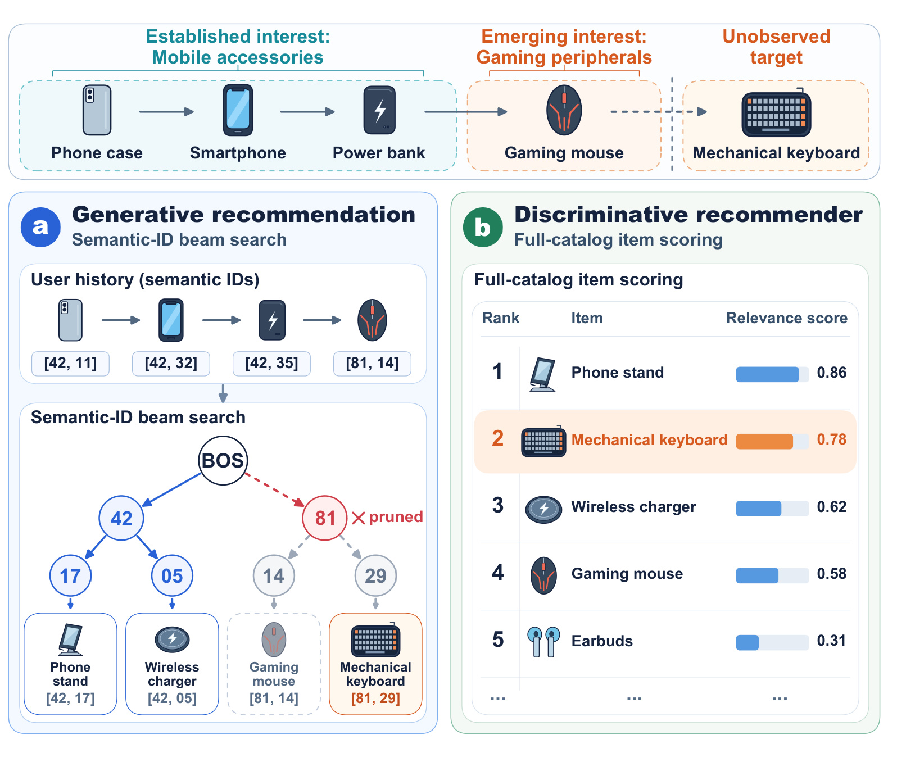
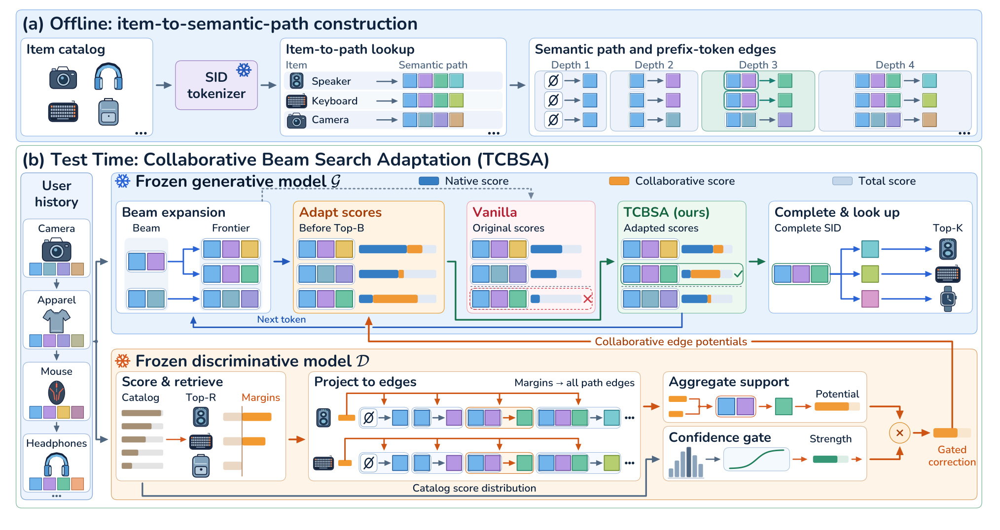
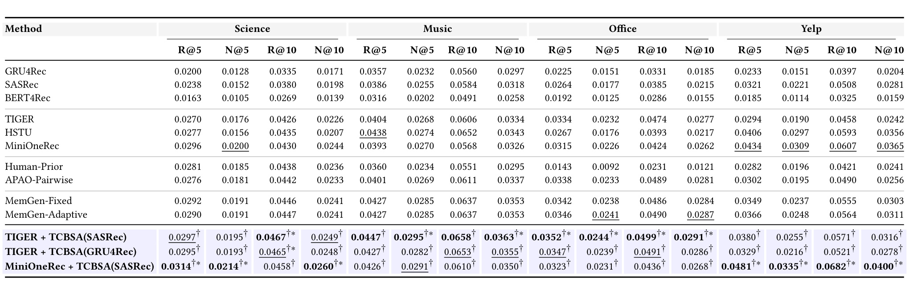
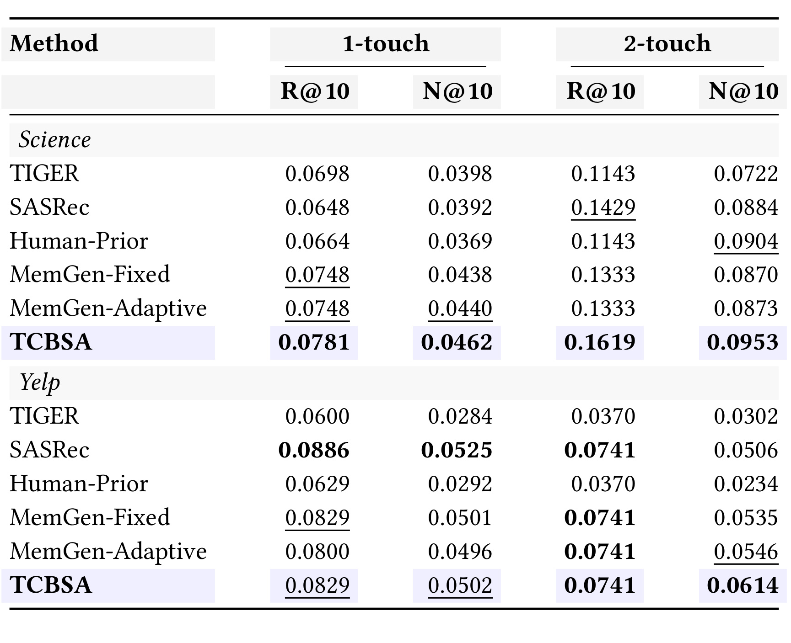
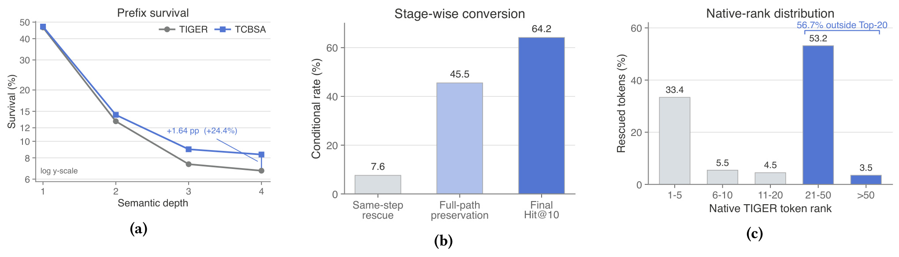
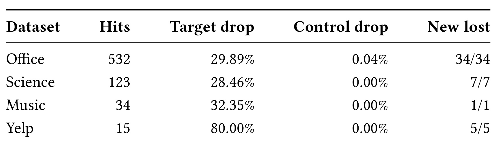
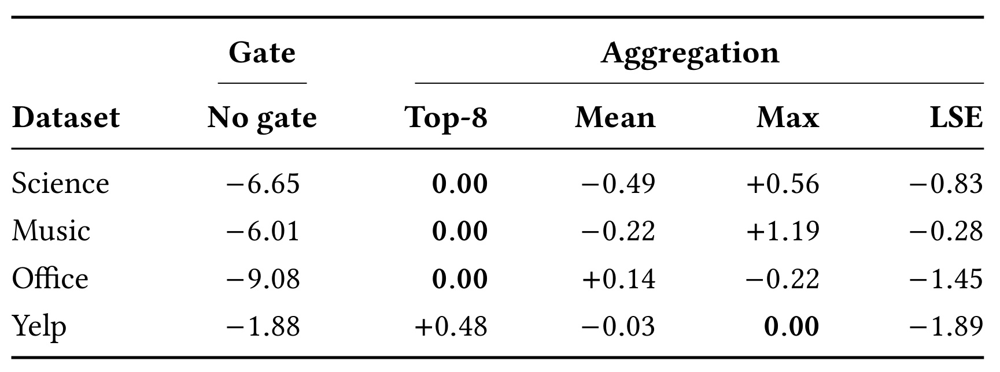
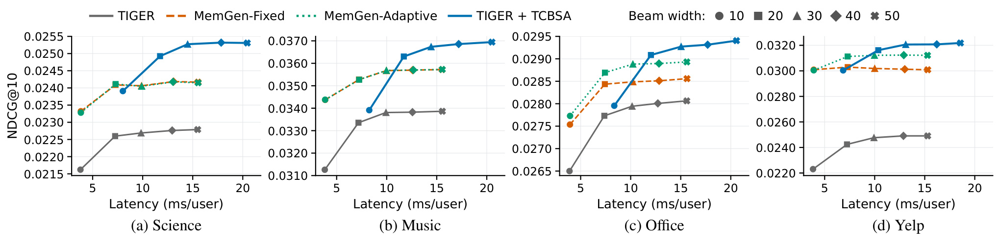

TCBSA：把物品协同分数提前送入语义束搜索
论文：From Item Scores to Semantic Tokens: Test-Time Collaborative Adaptation for Generative Recommendation
作者：Xiongfeng Shan、Xing Tang、Hanchong Chen、Fuyuan Lyu、Lingjie Li、Jingyan Jiang、Dugang Liu、Xiuqiang He。第一作者主要机构：深圳技术大学；合作机构：麦吉尔大学、深圳大学。
发布时间：2026-10-23，arXiv v1；来源核验：2026-10-27（Asia/Shanghai）。
论文入口：arXiv:2610.32098
代码状态：未核验到本文独立代码/项目链接。PDF 中 ACM 的 2018 年、会议名称及 DOI 是模板占位，不能视为正式发表或接收信息。
目录：
1. 背景和问题
生成式推荐的束搜索可能不可逆地剪掉有价值的物品路径；完整物品上的协同分数必须在剪枝前转成共享语义前缀上的有效信号。
这句话是对论文摘要与引言问题定义的压缩转述。语义标识符推荐把物品编码成数个离散词元，预测下一物品变成逐层生成编码。它带来的抽象层次很有吸引力：多个物品共享较粗的语义前缀，模型可以先找到兴趣区域，再逐步细化到具体物品。但是，预测一个完整物品和让一条部分路径在每一层竞争中都存活，并不是同一个问题。某个目标的完整路径可能值得推荐，其早期词元却没有足够高的局部分数。一旦这一前缀被束搜索删掉，后面的层即便有很强的细粒度辨别能力，也没有机会访问它的所有后代。
论文特别关注新兴趣刚出现的时刻。用户长期浏览手机配件，最近仅有一条游戏鼠标行为，下一个目标可能是机械键盘。相对较长且一致的旧兴趣会占据序列的主要部分，冻结生成器可能仍优先扩展手机配件分支。这里的“新”指当前历史中只有一两次近期交互支持的兴趣转向，不意味着新用户、新物品或完全没有训练数据的冷启动。目标物品仍在目录中，模型面对的是历史内部的新旧兴趣竞争。把这一任务直接称作冷启动，容易误解训练与推理可见的信息边界。

Figure 1 用一个简化的两层语义树说明这种脱节。左侧生成器先保留编号 42 的旧兴趣分支，编号 81 被剪掉，于是同属游戏外设的鼠标和机械键盘都不可达。右侧判别模型直接对目录物品打分，却把机械键盘排在第 2。两边使用同一段用户历史，因此差异来自预测空间与决策过程，而不是右侧提前知道真实下一次交互。图中的分数是动机示例，不能当作实验准确率或现实系统日志。它说明的技术机会是：完整物品层面的相关性可能已被另一个模型识别，缺少的是把这种信息及时传给前缀竞争的通道。如果只在生成完成后对结果重排，已被剪去的编号 81 分支仍不会出现。若把判别候选硬限定成生成器的最终输出，又会失去生成路径对于检索集合之外物品的泛化空间。TCBSA 的设计正是利用共享语义边，在这两个极端之间构造软支持。这幅动机图还明确了目标从未在历史中出现这一点，观察到游戏鼠标并不等于观察到机械键盘。辅助模型需要从历史推断相关性，不能借助目标标签在线构建支持。
判别式序列推荐采用另一条预测路线。SASRec 或 GRU4Rec 从历史产生用户表示，再对完整物品计算相关性，不必逐层通过语义前缀门槛。这种方式不等于一定更准确，论文主表也显示不同数据集的骨干优势不同；它提供的是一种错误形态不同的辅助信号。因此本文的出发点是模型互补，而不是宣布生成式推荐可以替代判别式推荐，或者反过来。真正值得验证的是：辅助分数是否能在有限搜索预算中救回对生成器有价值的路径，而不是仅复制另一个推荐器的结果。
现有技术在注入信号的时间上存在区别。训练期融合协同行为、改造语义编码、加入行为先验头、采用前缀感知优化，都会改变训练过程；完成列表融合在推理之后结合两份物品排名，不能改变已经发生的搜索损失。奖励或价值引导搜索也能改变中间决策，但通常需要额外学习的评估器。本文选择一个更窄的设定：两个推荐模型已分别训练完毕，保持参数冻结，允许在线读取当前历史、对目录打分并修改生成器束搜索中的累计分数。测试时适配在这里指每个历史对应的搜索规则变化，不涉及梯度下降或在线反向传播。
这一设定的困难首先是粒度不匹配。一个物品分数对应完整编码，而一个候选词元对应的是当前前缀下的一条边；很多物品可以共享这条边。若只把某个物品的排名写到末尾，无法支持早期选择；若在所有层无差别复制原始分数，又会把判别模型任意的分数零点和尺度带入搜索。其次是可靠性不一致：某些历史下判别模型判断集中，另一些历史下分布平坦，固定强度的干预可能破坏生成器原本正确的路径。最后是预算问题，多跑一个模型和构建边势能都有成本，不能因为两边不更新参数就称为零开销。
本文因此应被读作一种解码接口改造：先把辅助模型分数变成相对于检索边界的正间隔，再把这些间隔聚合到共享路径边，最后用历史级置信门控制支持强度，在每次全局剪枝之前加到累计路径分数中。它没有发明新的语义编码器，没有联合训练双塔，也没有增加测试标签。价值集中在干预位置、跨空间变换和受控强度这三个环节。对于已有生成式召回与判别排序组件的团队，这个接口具有可迁移性；是否值得上线仍需根据目录规模、已有打分缓存、语义分支共享情况和业务延迟重新测量。
对搜索错误的判断还需要区分建模与求解。原生生成分布即使给某个目标相当高的完整概率，也可能因为束宽有限而没有找到它；另一方面，一个目标在原生完整概率上本来就低，增大束宽未必让它进入最终前列。本文用另一模型的协同偏好改变路径评分，实际同时影响探索范围与最终排序，所以不能把全部准确率增益归为纯搜索近似误差被消除。这里也没有引入新增交互或外部文本知识，新增信息来自两个模型对同一历史形成的不同归纳偏好。对已有系统的评估应先追踪目标在哪一层退出，再决定是否需要搜索阶段融合；如果主要问题发生在编码冲突、目录缺项或训练标签错误，单独增加边势能未必触及根因。论文将共同编码固定，也是为了让观察更集中于解码接口，而非同时改变表示能力。
2. 方法
2.1 从物品分数到共享语义边势能
符号解释：设用户历史为 $x_u$，目录为 $\mathcal I$，物品 $i$ 的语义编码为 $c(i)=(c_1(i),\ldots,c_L(i))$。生成器 $G$ 对编码进行自回归建模。条件概率中的历史与已经产生的编码共同决定下一词元，目录中的同前缀物品在分叉之前共享这些决策。完整路径概率是多个条件概率的连乘，实际搜索通常累加其对数以便比较：
$L$ 是编码长度，$c_{<\ell}$ 是已经生成的前缀。实验中前三层来自残差量化，第四层用于消除碰撞，因此 $L=4$。在线束宽为 $B$，每一层从所有保留父前缀的扩展中选全局最高的 $B$ 个。这个全局竞争意味着不能只在每个父节点内部判断某个词元是否足够好；不同父前缀累计分数也会改变生存结果。
判别模型 $D$ 对完整目录计算 $s_D(i\mid x_u)$，得到 Top-$R$ 集合 $\mathcal R_u^R$。设第 $R$ 大分数为 $s_D^{(R)}(x_u)$，论文不用原始分数直接作为奖励，而定义：
其中 $[z]_+=\max(z,0)$。这个间隔表达物品高出检索边界多少；边界及以下物品贡献为零。若所有分数同时加一个常数，差值不变，因此跨历史的任意分数零点不会影响该步投射。但这种平移不变性不等于缩放不变性：分数乘一个常数仍会改变间隔幅度，也会改变后续软最大归一化的集中程度。
离线查找表为每个物品记录全部前缀—词元边。这里必须保留前缀条件，相同词元值在不同父前缀之下属于不同的边，不能用一个全局词元词典汇总支持；否则本来不相关的语义分支会相互污染。在线把检索物品的间隔投射到这些边，所有当前历史特定的数值仍在本次请求重新计算，只有结构映射复用。定义为：
$p$ 表示当前前缀，$t$ 表示待扩展词元，$A$ 是这条边的协同势能。没有检索物品经过的边，其局部势能为零。聚合器主要采用最大值或前 $M$ 大间隔的均值，均值的分母取实际可用条目数和 $M$ 中较小者，避免支持物品数量不足时人为稀释。Science、Music、Office 选前 8 均值，Yelp 选最大值；这是验证集选择结果，并不是理论要求所有数据都用同一聚合器。

Figure 2 的上半部分是一次性准备：固定语义编码器把目录物品转成路径，查找表随后复用。下半部分有两个冻结分支。判别模型读取历史后完成全目录打分与 Top-$R$ 选择，沿每个入选物品的所有路径边投射正间隔；同一条边上多个物品的支持经聚合形成稀疏势能。生成模型按原来方式计算词元概率和扩展候选，但在选全局 Top-$B$ 之前读取势能并修正分数。图里橙色支持并没有替换蓝色生成分数，而是改变两条路径之间的累计竞争关系。绿色门控制的是整个历史下的干预力度，而非为每个物品额外训练一个网络。离线查找减少在线路径解析成本，无法消除判别器打分成本。共享边还带来一个重要性质：不在 Top-$R$ 的目标也可能与入选物品共享前几层边，从而继承早期支持；但它独有的后续边仍由生成器完成，不会因为共享一次前缀就自动得到完整推荐。因而检索集合是支持来源，不是输出白名单。理解这一点才能区分本文与“检索若干物品后重排”的接口，也能看出潜在副作用：语义相近却不适合当前用户的后代，同样可能获得早期支持。后面的消融与路径分析要同时检查新增保留和原有路径被挤出的情况。另一个容易忽略的输入输出关系是：Top-$R$ 检索输出的是物品集合与分数，边投射输出的是稀疏路径字典，束扩展最终读取的则是候选边上的一个标量。只需要补偿被实际扩展的边，未支持边仍保留原生概率评分；但其祖先已经积累的正支持会继续留在路径总分中。把这一累积性误写成每层重新归零，将改变完整物品排序和理论生存条件。
2.2 置信调节与全局剪枝前更新
为避免不可靠的判别分数统一主导搜索，作者先对全目录分数做软最大归一化，再取最大值作为集中程度。这个步骤与边势能聚合分开进行：势能回答哪个前缀得到支持，置信回答本次历史应让支持发挥多大作用。两者共用判别输出，但全目录归一化的分母不能直接换成检索子集的分母，否则集中程度和阈值的含义都会发生改变。原文定义为：
这里 $q_D$ 只是归一化分数，$m$ 是相对置信代理，不能解释为“推荐正确概率”。目录大小、分数温度以及模型校准状态都会影响它。干预强度采用可调的 sigmoid 门：
$\lambda>0$ 控制最大尺度，$k>0$ 控制转折陡峭程度，$\tau$ 是阈值。置信较低时强度衰减，较高时趋近上限。门不是硬开关，即使低于阈值仍可能非零；因此“低置信完全退回原生搜索”并非本文一般保证。参数在验证集选择，不能看测试结果后再调整。随后生成器对候选扩展采用：
$\pi_0$ 是冻结生成器原始词元分布，$p\oplus t$ 是接上新词元的路径，空前缀分数为零。支持必须在全局 Top-$B$ 剪枝前注入，这是方法产生路径恢复能力的必要接口位置。它改变搜索用的累计分数，并未重算一个归一化的新生成分布，也没有对参数或原始词元概率进行更新。经过 $L$ 层后，有效编码映射回物品，按适配分数输出 Top-$K$。
2.3 生存充分条件、稳定性和成本
对部分路径 $h$ 展开递归，可把适配分数写成原始分数和累计支持两项。由于历史在一次解码中不变，门值也保持固定，才能把它从各层势能和式中提出。这个分解明确了收益来源：生成器本身继续负责条件词元概率，另一模型负责沿既定路径累加的偏好。若改为每层动态重新计算门值，就需要重新推导，而不是直接引用该分解：
令真实目标前缀为 $y_{1:\ell}$，竞争路径为 $h$，定义目标相对协同优势 $\Delta C(h)=C(y_{1:\ell})-C(h)$，原始分数落后量 $\Delta S(h)=S_0(h)-S_0(y_{1:\ell})$。若目标已在本层候选前沿中，选出一个竞争集合，集合外最多只有 $B-1$ 个竞争者，并且集合内每个竞争者都满足：
那么这些集合内路径都排在目标之后，剩余最多 $B-1$ 条路径能超过目标，所以目标进入全局束。这个结论是充分条件，不是实际运行时所有目标都满足的性能保证。真实下一物品只用于理论表述与离线检查，不参与在线构造势能。若上一层早已丢失目标，其后代不在当前候选前沿，当前层条件也不能凭空恢复它；要保证全路径生存，必须每一层连续满足相应条件。
附录还令 $\Omega_{x_u}(h,h')$ 表示两条同长路径在每层边势能差的绝对值总和。当 $m(x_u)\le\tau$ 时，利用 sigmoid 的指数上界得到：
$\Delta_u$ 为适配附加分数。若原始两路径差距大于右侧，其排序保持不变；若差距很小，即使低置信也可能交换次序。这个界描述分数扰动，不直接给出准确率、错误推荐数或新兴趣召回保证。离线路径查找时间和存储均随目录大小乘编码长度增长；在线稀疏势能最多涉及 $RL$ 次贡献。固定聚合预算时，总在线时间为：
$T_D$ 包含全目录打分、置信计算与检索，$T_G$ 是原生生成搜索成本。每条扩展增加常数级查询不改变生成器的渐近复杂度，然而完整方法仍要付出辅助模型与数据访问成本。训练与推理的界限在这里很明确：模型检查点和语义编码保持固定，验证阶段选择适配参数，线上每个历史重新产生分数、势能和门值；“无需训练”指无需重训这两个模型，不代表无需准备、无需选参或免费推理。
3. 实验结果
3.1 全目录主结果与跨模型迁移
实验覆盖 Amazon Reviews 2023 的 Science、Music、Office，以及 Yelp。处理后的用户数与物品数分别为 50,985/25,848、58,062/24,701、225,726/77,929 和 30,431/20,033。Amazon 使用官方 5-core 时间序列；Yelp 使用指定 2019 时间窗口并迭代执行 5-core。所有评分被视作隐式交互，不把低星评价排除为负反馈。每个用户按时间保留最后一条测试、倒数第二条验证，其余训练，输入最多包含最近 20 条历史。这一上限作用于模型输入，不改变附录统计里的完整交互总数。
评估针对完整目录，不采样负例，历史交互物品仍可被推荐，填充项被屏蔽。指标为 Recall 与 NDCG，在 $K=5,10$ 报告；验证 NDCG@10 用于模型和参数选择。显著性使用用户级配对 bootstrap，10,000 次重采样，阈值 $p<0.05$。各语义标识符模型共享相同物品编码，隔离编码差异的影响。默认 $B=20$、$R=500$，适配参数在 TIGER–SASRec 上按数据集选定，再直接迁移到 TIGER–GRU4Rec、MiniOneRec–SASRec，没有针对每个组合重新调参。

Table 1 的强结论是：TCBSA 的不同组合合起来取得 16 个数据集—指标列的最佳值，其中 14 列相对最强基线显著。它不是单个固定组合独占所有列。Science 的部分列由 MiniOneRec 配合 SASRec 最好，Music 与 Office 多由 TIGER 配合 SASRec 最好，Yelp 的四项最佳值来自 MiniOneRec 配合 SASRec。以默认组合看，TIGER 的 NDCG@10 在 Science 从 0.0226 到 0.0249、Music 从 0.0334 到 0.0363、Office 从 0.0277 到 0.0291、Yelp 从 0.0242 到 0.0316。论文用未四舍五入数值计算相对提升，给出 4.9%–30.4% 范围，不能用表内四位小数反推后要求完全一致。跨骨干迁移具有价值：MiniOneRec 使用自身最终强化学习检查点仍获得改进，换成 GRU4Rec 的协同信号也能改善 TIGER，说明方法并非只适配某一分数器。与此同时，默认 TIGER 组合在 Yelp 的绝对成绩仍低于 MiniOneRec 及其适配版本，也不总能超过所有强骨干。主表因此支持“冻结骨干上的可迁移改善”，不能据此说任何生成器加上 TCBSA 都达到同一性能水平。相较两种 MemGen 完成列表融合，默认组合各列均更好，才是“提前干预优于只在终点合并”的直接经验支持；这种支持仍依赖本实验设置、基线实现和验证选择口径。还需注意星号和剑号含义不同：前者比较该列最强基线，后者比较对应生成骨干，不能将两种检验合并成“每个组合都显著最优”。例如 TIGER 配合 GRU4Rec 的提升虽然普遍存在，其很多列没有对最强基线的显著标记；MiniOneRec 组合在 Music 也只是改善自身骨干，绝对值仍低于默认 TIGER 组合。表中共享参数的迁移证据说明适配不必每次换骨干都重新搜索参数，却没有证明换一种语义编码、目录分布或全新判别分数尺度之后仍能保持相同配置。对表格的阅读应同时按列比较最强方案、按行比较适配前后，再观察显著标记，三者回答不同问题。
训练期增强基线也值得分开看。Human-Prior 不是每个数据集都强，例如 Office 明显偏弱，故只与它比较会夸大改进。APAO-Pairwise 与 HSTU 提供更有挑战性的参照，后者在 Yelp 已经比原生 TIGER 强很多。本文主张跨两种生成骨干、两种辅助模型有效，而不是对所有推荐架构形成普适统治。参数迁移消除了“每个组合都额外调参”的一部分疑虑，但每个数据集仍用了不同门尺度与阈值，因此也不能称为完全免调参。
3.2 稀疏新兴趣与前缀恢复
新兴趣子集用 Sentence-T5 物品表示做 16 类聚类，真实下一物品所属簇定义目标兴趣。一次或两次接触指历史结尾恰好有相应条数连续交互属于该簇，再往前 4 条至少 3 条属于另一个共同簇；过短历史排除。Science 两组分别有 602、105 例，Yelp 为 350、54 例。真实标签只参与离线队列构造，推理仍只读取既有历史。两组是不同实例集合，不能当作对同一用户从第 1 次到第 2 次兴趣暴露的纵向干预实验。

Table 2 表明适配版本在四个子集的 Recall@10 和 NDCG@10 都超过原生 TIGER。Science 一次接触 NDCG@10 从 0.0398 到 0.0462，两次从 0.0722 到 0.0953；Yelp 从 0.0284 到 0.0502、从 0.0302 到 0.0614。Yelp 相对提升很大，一部分原因是原生骨干起点较低，不能只宣传翻倍而省去绝对值。对独立判别模型比较更有约束力：Yelp 一次接触时 SASRec 的 0.0525 高于 TCBSA 的 0.0502，Recall 也是 0.0886 高于 0.0829。这说明辅助信号本身已经很强，融合不保证超过它。两次接触时 TCBSA 的 NDCG@10 最好，Recall 与 SASRec、两种融合并列，但该队列只有 54 例，少数命中即可明显改变指标。结果可用于支持稀疏近期兴趣场景的潜力，尚不足以推断普遍的人群效果，尤其不能把两组差异解释为每个用户多一次点击都会获得确定提升。这一子集定义也有选择性：要求旧兴趣四条中至少三条同簇，筛掉了本来就多兴趣交错的历史。因此结果更接近清晰旧兴趣之后出现短新兴趣片段的场景，未直接覆盖所有短期偏好变化。聚类基于固定语义表示，兴趣边界可能与真实用户意图不同，后续最好补充人工或业务标签验证。

Figure 3 转向真正的中间搜索轨迹。Yelp 默认束宽下，末层目标前缀存活从 6.72% 到 8.37%，相对增加约 24.44%；图上百分点标注经舍入约为 1.64。原生模型首次剪掉目标的 28,385 例中，同层救回 2,163 例，占 7.62%；其中 985 例保住完整路径，占救回例的 45.54%；完整保留后进入最终 Top-10 的是 632 例，占 985 例的 64.16%。三根柱子分母不同，不能把 64.16% 当全体用户命中率。右图显示被救回词元的原始排名中位数是 22，56.68% 在原生 Top-20 之外，说明支持确实能推动原本排位不高的扩展。但该排名是在真实前缀条件下离线诊断，并非在线给模型真实前缀。适配也挤掉原生首层幸存目标的 12.68%，所以它并不是无损保留所有原生正确路径。最终 Hit@10 从 1,393 到 1,738，净增 345，体现收益和损失共同作用后的结果，而非所有局部救回都变成新增命中。同层救回的后续流失还说明，早期正确决策只是必要条件之一，后层的语义细化和最终分数仍影响推荐。因此诊断应保存完整深度轨迹，而不能只计算第一层前缀是否留下。从漏斗看，救回之后仍有超过一半没有走完路径；走完路径之后又有一部分未进入前十。两种损失分别对应中后层竞争和最终列表位置，优化手段未必相同。若对同层救回直接计为收益，会把尚未兑现的搜索改善计入推荐质量。左图每层存活率的分母覆盖整套测试实例，和中图条件比例也不相同。右图较差的原生词元排名说明仅在原生前二十词元内部做轻微重排可能覆盖不足，但论文图上排名依据真实父前缀计算，不能据此宣称线上需要枚举所有词元才有效；实际扩展集合仍要按解码器实现核验。
3.3 共享前缀归因与置信消融
检索提供势能并不等于输出被限制在检索集合。默认 $R=500$ 时，TCBSA 正确 Top-10 命中中处于 SASRec Top-$R$ 之外的占比，Science 为 5.16%（123/2,383）、Office 为 4.72%（532/11,260）、Music 为 0.89%（34/3,823）、Yelp 为 0.86%（15/1,738）。这些分母是正确命中总数，并不是全部测试用户或全部集合外目标。$R=20$ 时该比例为 21.49%–38.53%，$R=2000$ 仍有集合外命中。现象证明没有硬输出边界，却不能单独证明这些命中由共享边造成，因为原生生成器也可能本来就会命中。

Table 5 的干预更接近归因：对原本正确且处在检索集合外的命中，移除真实目标路径上的正修正，再重放冻结解码；控制组在相同深度、原生搜索活跃父节点上移除强度大致匹配的非目标边，重复 5 次取平均。Office 丢失原有命中的 29.89%，Science 为 28.46%，Music 为 32.35%，Yelp 为 80.00%；对应控制几乎无损失。相对 TIGER 新增的集合外命中合计 47 例，全部在目标路径移除后消失。这比“共享边存在”和“集合外有命中”同时出现更强，说明部分输出确实依赖相应纠偏。然而干预使用真实目标，仅用于离线分析，不能在生产环境按真实目标选择边。Yelp 80% 的分母只有 15 个命中，也应保留样本量。更细的轨迹中，Office 丢失 159 例只有 44 例观察到目标路径束损失，Science 35 例中仅 9 例，Music 11 例中仅 6 例，Yelp 12 例中仅 9 例。剩余命中可能因最终排名变化退出 Top-10，所以“移除纠偏导致失去命中”不能全部写成“目标被剪枝”。此外，对已命中的子集进行归因，也不能替代对全体集合外目标的召回率比较。控制组并非随机删除任意边，而是约束到相同语义深度和原生搜索活跃父节点，再尽量匹配被移除支持强度，减少“只要删任何支持都会丢命中”的混淆。附录报告四数据集平均强度匹配误差约为4.30%至7.18%，并没有声称完全等量或产生完全相同的束竞争。目标支持覆盖了Office的505/532、Science的118/123、Music的33/34以及Yelp的15/15例。未覆盖的集合外命中说明一部分输出可由生成器自身完成。该结果的合理解释是协同共享边对一部分集合外预测具有实质作用，而非所有集合外物品都靠它发现，更不是集合外群体总体公平性已经改善。

Table 6 用每个数据集最终验证配置作为零点，报告相对 NDCG@10 变化。移除门后统一使用最大尺度，Science、Music、Office、Yelp 分别下降 6.65%、6.01%、9.08%、1.88%，支持根据历史可靠性控制干预。聚合器替换的影响整体更小，各数据集最大绝对相对偏差为 0.83%、1.19%、1.45%、1.89%。某些替代聚合器在测试上略好，例如 Music 最大值聚合比选定的前 8 均值高 1.19%，作者仍保持验证集选择，没有事后改用测试最佳配置。这一处理让比较更可信，也表明没有单一聚合器始终最优。门控结果证明当前集中程度代理有用，但没有比较所有可能的校准方法、熵指标或不确定性估计，不能因此断言最大软最大概率是最优置信度定义。生产目录扩容或模型温度变化时，需要重新检查门值分布与尺度，避免把测试集中的小幅敏感性结论外推到不同评分系统。表中数字是相对于各自选定配置的变化，而不是几种方法的绝对准确率；跨数据集比较百分比大小时，还要考虑基准指标和分数分布不同。验证集与测试集的配置选择边界在此保持不变，避免用消融结果事后挑最好的一列。
附录敏感性在一个共同参考点逐次改变 $\lambda,k,\tau$，三个方向的最大下降分别为 1.08%、3.02%、2.21%；共同参考点不等于每个数据集最终配置。检索宽度在完整验证集搜索 20、100、500、1000、2000，宏平均 NDCG@10 在 500 为 0.0362，达到网格最高。选择规则要求宏平均距最佳不超过 0.5%，同时最大单数据集落后不超过 1.5%，取符合要求的最小宽度。Music 单独在 100 时更高，说明共享 500 是跨数据集折中，不是每个数据集各自最优。随着检索变宽，正间隔阈值下降且支持路径增多，不能把宽度理解成只增加数量而不改变纠偏分布。
3.4 延迟与搜索预算
计时使用相同 NVIDIA RTX 5880 Ada Generation，批大小为 32，报告同步后的平均每用户推理毫秒数。计时包括模型前向、方法所需判别打分、列表融合和协同适配，不包括加载、分词、指标计算和文件读写。因此它是规定批处理下的推理效率比较，并非真实在线请求的端到端 p99，也未包括服务网络、排队和缓存刷新。

Figure 5 中横轴延迟越低越好，纵轴 NDCG@10 越高越好，点形状表示不同束宽。TCBSA 在 4 个数据集乘 5 个束宽的全部 20 组配置都优于同束宽原生 TIGER，但这种精度提升有成本：默认 $B=20$ 时，延迟是 TIGER 的 1.43–1.63 倍。更有吸引力的比较发生在不同搜索预算之间：TCBSA 的 $B=20$ 相对原生 TIGER 的 $B=50$，精度高 3.64%–26.94%，延迟低 22.95%–32.27%。因此正确表述是辅助纠偏比单纯扩大原生束宽更有效地使用这段预算，而非“适配在相同束宽免费提速”。当 TCBSA 束宽从 30 增到 50 时，仅增加 0.14%–0.57% 的精度，却多出 36.78%–42.09% 延迟，显示很快进入收益递减。它在 $B\ge20$ 时优于两种完成列表融合，$B=10$ 在 Music 和 Yelp 略低于更强融合基线，说明极窄搜索下仍可能受候选前沿限制。图中几条线接近平坦也提醒读者，模型本身的分数偏好不会因增加搜索宽度自动消失；更大的束只扩大当前评分规则下的探索，不一定把新兴趣分支推到前列。因此，若系统原本采用很小束宽，应该先在自己的预算曲线上寻找可比点，而不是直接套用文中的跨束宽加速比例。部署角度还要区分平均吞吐摊销和用户实际等待时间。批大小固定时，矩阵运算与辅助评分可能有效摊销；单请求流量低或异步服务跨设备时，其同步与数据传输成本未必相同。图中相同加速器消除了部分硬件差异，却没有模拟峰值并发和长尾历史。若业务已有判别分数可复用，新增成本可能更低；若需要额外加载独立模型、完整目录表示或跨机访问，又可能更高。这些只是基于系统接口的条件分析，不是本文测量结果。准确率曲线已经显示束宽递增后边际收益很快变小，实际选点应由目标延迟和净增命中共同约束。
4. 总结
TCBSA 最值得保留的贡献，是把已存在的物品级协同判断变成共享语义边上的软支持，并把支持放到不可逆决策之前。它让两个冻结模型在同一次生成解码中协作，避免训练期改造，也保留生成器访问辅助检索集合外物品的机会。主结果、路径追踪、目标支持移除和延迟曲线从不同角度构成较完整的证据链：既看到指标改善，也看到中间路径变化，再看到特定纠偏对部分输出确有贡献。不过这条链每一环的对象和分母不同，必须保留对应边界。
可迁移的启发有三个。 第一，推荐系统有多个模型时，互补信号可以在搜索过程中的可行动位置融合。若业务瓶颈是早期路径消失，最后一层排序再强也不能补回未生成候选。第二，辅助信号的作用单位应匹配主系统决策单位，完整物品分数需要通过固定编码映射变成前缀条件边势能；对其他分层索引或树搜索，先确认共享边是否有可靠语义再考虑借鉴。第三，评估融合方案要同时保留同预算、同精度与路径诊断三个视角，单看总体增益或某次救回都容易夸大价值。这些是从本文机制推导的工程理解，不是论文已验证的线上收益。
局限至少有四项。其一，全目录判别打分在这里不可省略，目录扩展到千万量级时，辅助评分、归一化及检索成本可能成为主要瓶颈，论文当前目录约 2 万至 8 万物品无法直接代表工业规模。其二，最大归一化分数是集中程度而非校准正确率，对分数尺度与目录变化敏感；门控小范围调参稳健不等于跨系统通用。其三，共享边支持会惠及多个后代，也会挤掉部分原生正确路径，本文首层幸存目标损失 12.68% 就是直接警示，需要检查不同人群、兴趣簇和热门度分布的净影响。其四，新兴趣队列样本尤其 Yelp 两次接触只有 54 例，且为不同实例组成，不能得出用户随点击次数稳定改善的因果结论。其五，没有线上实验、长期反馈或服务尾延迟验证，完整代码入口也未独立核验，工程复现仍存在实现与运行环境不确定性。
后续跟进应落到三个具体实验。首先，在相同语义编码和冻结检查点下记录每层目标前缀进入候选、剪去、救回及最终排名变化，分别统计新增命中和损失命中，复核离线“路径恢复”解释是否占主要部分。其次，固定打分器尝试更大目录、不同分数温度和近似检索，观察门值、势能稀疏度、集合外召回与辅助成本如何变化；近似检索会改变 Top-$R$ 边界与置信口径，属于新的方法变体，不能默认继承本文结果。最后，用相同硬件和批处理条件绘制本系统的搜索预算曲线，再补单请求延迟与尾分位数，比较“加协同模型”“扩大束宽”“完成列表融合”是否仍存在清晰的优劣边界。只有这些验证通过，才适合把论文中的解码纠偏接口转成长期服务组件。
复现时还应保存验证参数、语义编码版本与目录快照，而不是只保存两个模型权重。编码一旦更新，物品到路径映射和共享边支持都必须一致重建；评分器若更新，即使结构不变，间隔和集中程度也会变化。由此得到的维护成本不在本次离线计时范围内，却直接影响长期运行的一致性。把这些版本边界纳入实验记录，才能区分算法退化与数据或映射不匹配造成的异常。